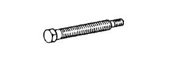

САЛЬНИК ЧАШКИ ЗАДНЕГО ДИФФЕРЕНЦИАЛА > ЗАМЕНА > Подготовка

| 09214-76011 | Оправка шкива коленчатого вала | |
 | 09308-10010 | Съемник сальников |
| 09308-14010 | Трубчатая оправка A | |
| 09308-55010 | Съемник сальников | |
 | 09330-00021 | Приспособление для блокировки соединительного фланца |
| (09330-00030) | Штифт | |
 | 09556-22010 | Съемник переднего подшипника механизма |
 | 09930-00010 | Зубило для раскернения гайки приводного вала |
 | 09950-30012 | Набор универсальных съемников A |
 | (09951-03010) | Верхняя тарелка |
|  | (09953-03010) | Центровочный болт |
 | (09954-03010) | Рычаг |
 | (09955-03030) | Нижняя тарелка 130 |
 | (09956-03040) | Переходник 22 |
| Фирменный герметик Toyota 1281, Three Bond 1281 или аналогичный | |
| Фирменный герметик Toyota 1324, Three Bond 1324 или аналогичный | |
| Фирменный герметик Toyota 1344, Three Bond 1344 или аналогичный |
| Латунный брусок | - |
| Зубило | - |
| Индикатор часового типа с магнитной подставкой | - |
| Комплект плоских щупов | - |
| Микрометр | - |
| Круглогубцы | - |
| Пресс | - |
| Берлинская лазурь | - |
| Лента | - |
| Динамометрический ключ | - |
| Тиски | - |
| 09013-1C550 | Головка торцевого ключа "TORX" Е-типа E14 | - | |
 | 09051-1C410 | Бородок с тонким цилиндрическим концом 5 | - |
 | 09082-00040 | Электрический диагностический прибор TOYOTA | - |
 | 09905-00012 | Съемник пружинных стопорных колец № 1 | - |
 | 09905-00013 | Съемник стопорных колец | - |
| Тип дифференциала | Класс масла по степени вязкости | Вязкость | Заданные условия |
| Стандартный | Фирменное масло для дифференциала LT 75W-85 GL-5 от компании Тойота или аналогичное | 75W-85 | 1,35-1,45 л (1,43-1,53 кварты США, 1,18-1,27 английской кварты) |
| Тип дифференциала | Класс масла по степени вязкости | Вязкость | Заданные условия |
| Без блокировки дифференциала | Фирменное масло для дифференциала LT 75W-85 GL-5 от компании Тойота или аналогичное | 75W-85 | 2,65 - 2,75 л (2,80 - 2,91 кварты США, 2,33 - 2,42 английской кварты) |
| С блокировкой дифференциала | 2,60 - 2,70 л (2,75 - 2,85 кварты США, 2,29 - 2,38 английской кварты) |